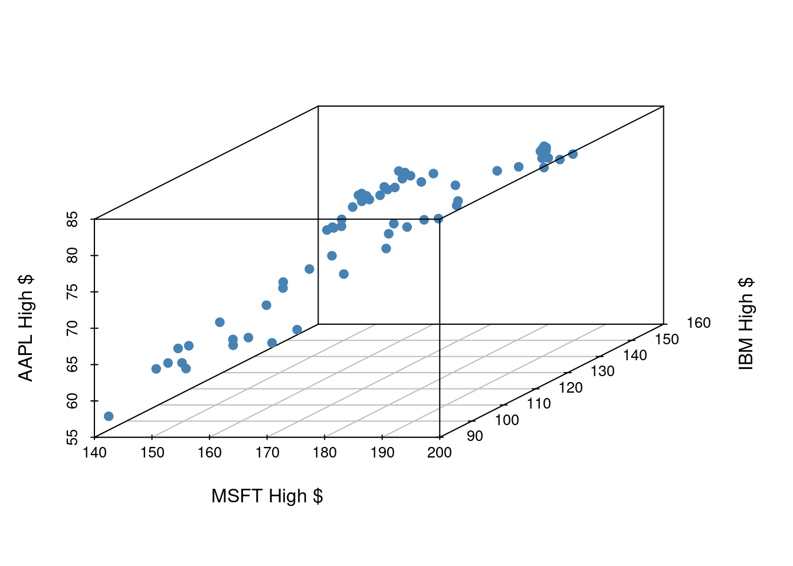
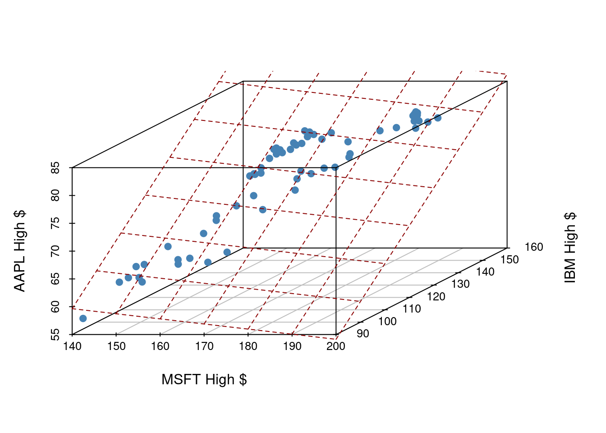
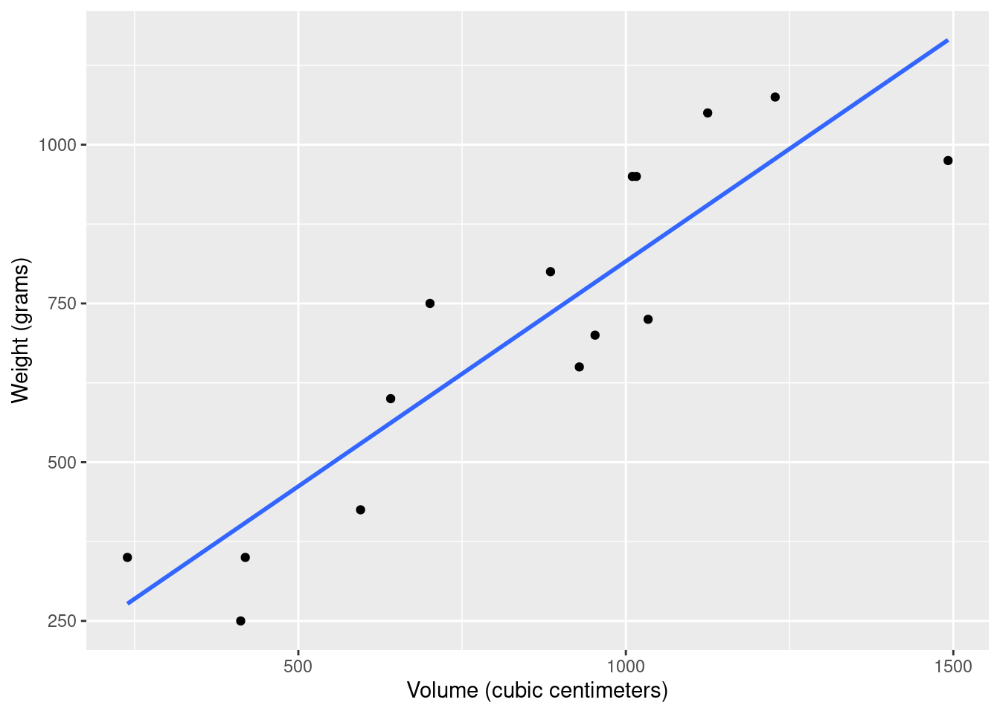
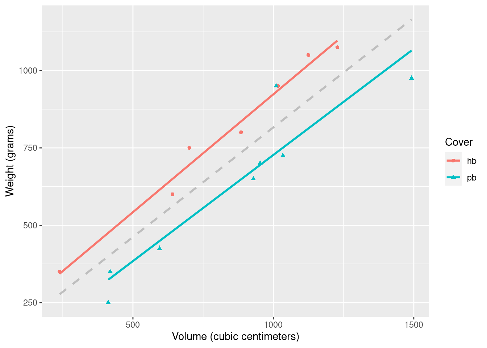

library(tidyverse)
library(tidymodels)
library(scatterplot3d)Regression with multiple predictors
Warm up
Announcements
- No lab or class on Monday, May 27th.
- Project proposal due Tuesday, May 28th.
- Lab 3 due Wednesday, May 29th.
Load packages and data
\(R^2\) and model fit
\(R^2\)
\(R^2\), aka “the coefficient of determination” or “correlation squared” is a way to see how well a given model fits the data.
\[ R^2 = r^2 \]
Sum of squares total, SST
The sum of squares total is a measure of the total variability in the outcome variable:
\[ SST = (y_1 - \bar{y})^2 + (y_2 - \bar{y})^2 + \cdots + (y_n - \bar{y})^2 \]
Sum of squares residuals, SSE
The sum of squares residuals (error) is a measure of the variability in the residuals, i.e., variability left unexplained in the outcome variable after the model is fit:
\[ SSE = (y_1 - \hat{y}_1)^2 + (y_2 - \hat{y}_2)^2 + \cdots + (y_n - \hat{y}_n)^2 \]
\(R^2\), another look
\[ R^2 = \frac{SST - SSE}{SST} = 1 - \frac{SSE}{SST} \]
. . .
- This can be summarized as “\(R^2\) is 1 minus the sum of squared residuals divided by the sum of squared total”.
. . .
- In other words, \(R^2\) is the proportion of variability in the outcome that is explained by the model.
\(R^2\)
If the sum of squared residuals is 0, then the model explains all variability and \(R^2 = 1 - 0 = 1\).
If the sum of squared residuals is the same as all the variability in the data, then model does not explain any variability and \(R^2 = 1 - 1 = 0\).
\(R^2\) is a measure of the proportion of variability the model explains. An \(R^2\) of 0 is a poor fit and \(R^2\) of 1 is a perfect fit.
Finding \(R^2\)
To find \(R^2\) simply call the function glance() on your model_fit, e.g.
model_fit <- linear_reg() |>
fit(outcome ~ predictor, data = data_set)
glance(model_fit)Models with multiple predictors
Two predictors
\[ y = \beta_0 + \beta_1 x_1 + \beta_2 x_2 + \epsilon \]
- \(y\): the outcome variable. Also called the “response” or “dependent variable”. In prediction problems, this is what we are interested in predicting.
- \(x_i\): the \(i^{th}\) predictor. Also commonly referred to as “regressor”, “independent variable”, “covariate”, “feature”, “the data”.
- \(\beta_i\): “constants” or coefficients i.e. fixed numbers. These are population parameters. \(\beta_0\) has another special name, “the intercept”.
- \(\epsilon\): the error. This quantity represents observational error, i.e. the difference between our observation and the true population-level expected value: \(\beta_0 + \beta_1 x\).
- Effectively this model says our data \(y\) is linearly related to the \(x_1\) and \(x_2\) but is not perfectly observed due to unexplained errors.
A simple example
Let’s examine the first quarter of 2020 high prices of Microsoft, IBM, and Apple stocks to illustrate some ideas.

If we have three measurements (variables) then each observation is a point in three-dimensional space. In this example, we can choose one of our measurements to be the outcome variable (e.g. Apple stock price) and use our other two measurements (MSFT and IBM price) as predictors.
In general, the total number of measurements, i.e. variables (columns) in our linear model represents the spatial dimension of our model.
2 predictors + 1 outcome = 3 dimensions
The fitted linear model no longer looks like a line, but instead looks like a plane. It shows our prediction of AAPL price (\(y\)) given both MSFT price (\(x_1\)) and IBM price (\(x_2\)).

Fitting a multiple regression model in R
Find the equation of the plane by adding in new predictors:
my_model_fit <- linear_reg() |>
fit(outcome ~ predictor1 + predictor2 + predictor3 + ..., data = data_frame). . .
- This code template will fit the model according to the ordinary least squares (OLS) objective function, i.e., we are finding the equation of the hyperplane that minimizes the sum of squared residuals
. . .
- You can then display a tidy output of the model with the
tidy()function on your fitted model:tidy(my_model_fit)
Today we’ll explore the question “How do volume and weights books relate?” and “How, if at all, does that change when we take whether the book is hardback or paperback into consideration?”
Goals
Build, fit, and interpret linear models with more than one predictor
Use categorical variables as a predictor in a model
Compute \(R^2\) and use it to select between models
Packages
library(DAAG)Data
The data for this application exercise comes from the allbacks dataset in the DAAG package. The dataset has 15 observations and 4 columns. Each observation represents a book. Let’s take a peek at the data:
allbacks volume area weight cover
1 885 382 800 hb
2 1016 468 950 hb
3 1125 387 1050 hb
4 239 371 350 hb
5 701 371 750 hb
6 641 367 600 hb
7 1228 396 1075 hb
8 412 0 250 pb
9 953 0 700 pb
10 929 0 650 pb
11 1492 0 975 pb
12 419 0 350 pb
13 1010 0 950 pb
14 595 0 425 pb
15 1034 0 725 pbNote that volume is measured in cubic centimeters and weight is measured in grams. More information on the dataset can be found in the documentation for allbacks, with ?allbacks.
Single predictor
Exercise 1
Visualize the relationship between volume (on the x-axis) and weight (on the y-axis). Overlay the line of best fit. Describe the relationship between these variables.
ggplot(allbacks, aes(x = volume, y = weight)) +
geom_point() +
geom_smooth(method = "lm", se = F) +
labs(
x = "Volume (cubic centimeters)",
y = "Weight (grams)"
)`geom_smooth()` using formula = 'y ~ x'
Exercise 2
Fit a model predicting weight from volume for these books and save it as weight_fit. Display a tidy output of the model.
weight_fit <- linear_reg() |>
fit(weight ~ volume, data = allbacks)
tidy(weight_fit)# A tibble: 2 × 5
term estimate std.error statistic p.value
<chr> <dbl> <dbl> <dbl> <dbl>
1 (Intercept) 108. 88.4 1.22 0.245
2 volume 0.709 0.0975 7.27 0.00000626Exercise 3
Interpret the slope and the intercept in context of the data.
Intercept: when the book volume is 0, on average, the weight is approximately 107.68. This doesn’t make sense in the context of the data, and the intercept is only there to adjust the height of the line on the \(y\)-axis.
Slope: For each additional cubic centimeter the book volume increases by, on average, we expect the weight to increase by 0.71 grams.
Exercise 4
Calculate the \(R^2\) of this model and interpret it in context of the data.
glance(weight_fit)# A tibble: 1 × 12
r.squared adj.r.squared sigma statistic p.value df logLik AIC BIC
<dbl> <dbl> <dbl> <dbl> <dbl> <dbl> <dbl> <dbl> <dbl>
1 0.803 0.787 124. 52.9 0.00000626 1 -92.5 191. 193.
# ℹ 3 more variables: deviance <dbl>, df.residual <int>, nobs <int>Volume explains approximately 80% of the variability in book weights.
Multiple predictors
Suppose we now want to include the cover type of the book (hardback vs paperback) as a predictor.
We have discussed how a model with two predictors can be written as
\[ y = \beta_0 + \beta_1x_1 + \beta_2x_2 + \epsilon. \]
Important
What would it mean to add \(\beta_2 \cdot \text{hb}\) or \(\beta_2\cdot \text{pb}\) to receive \(y\)?
We will come back to this soon.
Exercise 5
Visualize the relationship between volume (on the x-axis) and weight (on the y-axis), taking into consideration the cover type of the book. Use different colors and shapes for hardback and paperback books. Also use different colors for lines of best fit for the two types of books. In addition, add the overall line of best fit (from Exercise 1) as a gray dashed line so that you can see the difference between the lines when considering and not considering cover type.
ggplot(allbacks, aes(x = volume, y = weight)) +
geom_point(aes(color = cover, shape = cover)) +
geom_smooth(method = "lm", se = F, color = "gray", linetype = "dashed") +
geom_smooth(aes(color = cover), method = "lm", se = F) +
labs(
x = "Volume (cubic centimeters)",
y = "Weight (grams)",
shape = "Cover",
color = "Cover"
)`geom_smooth()` using formula = 'y ~ x'
`geom_smooth()` using formula = 'y ~ x'
Important
The slopes of two lines seem fairly similar, however, their intercepts are different. Maybe we should have a model with different intercepts depending on the cover type.
Exercise 6
Fit a model predicting weight from volume for these books and save it as weight_cover_fit. Display a tidy output of the model.
weight_cover_fit <- linear_reg() |>
fit(weight ~ volume + cover, data = allbacks)
tidy(weight_cover_fit)# A tibble: 3 × 5
term estimate std.error statistic p.value
<chr> <dbl> <dbl> <dbl> <dbl>
1 (Intercept) 198. 59.2 3.34 0.00584
2 volume 0.718 0.0615 11.7 0.0000000660
3 coverpb -184. 40.5 -4.55 0.000672 Categorical predictor with two levels
When using a predictor with two levels, we create a variable that takes on two values, 0 or 1 depending on the level of the categorical variable. In our example, \(x_2\) (or \(\text{cover}_{pb}\)) is the variable representing whether the book is paperback. In particular, \(x_2 = 1\) is the book is paperback, and 0 otherwise. We can write this as:
\[ \widehat{\text{weight}} = \hat\beta_0 + \hat\beta_1\times\text{volume} +\hat \beta_2 \times \text{cover}_{\text{pb}}. \] Thus, our model becomes \[ \widehat{\text{weight}} = 198 + 0.718\times\text{volume} -184 \times \text{cover}_{\text{pb}}. \]
Exercise 7
In the model output we have a variable coverpb. Why is only the pb (paperback) level of the cover variable shown? What happened to the hb (hardback) level?
Hardback is the reference level, therefore it does not show up in the model output.
By default, R chooses reference level alphabetically. Thus, in our example, hb is the reference level.
Coefficients
To better understand what the coefficients represent, lets write out the model for hardback and paperback books separately.
Hardback: if the book is hardback, \(\text{cover}_{pb}\) = 0, so our model becomes: \[ \widehat{\text{weight}} = \hat{\beta_0} + \hat\beta_1\times\text{volume} +\hat\beta_2 \times 0 = \hat\beta_0 + \hat\beta_1\times\text{volume}. \]
Paperback: if the book is hardback, \(\text{cover}_{pb}\) = 1, so our model becomes: \[ \widehat{\text{weight}} = \hat{\beta_0} + \hat{\beta_1}\times\text{volume} +\hat{\beta_2}\times 1 = (\hat{\beta_0} + \hat{\beta_2}) + \hat{\beta_1}\times\text{volume}. \]
From the first case, \(\hat\beta_0\) corresponds to the intercept in the case when the book is hardback., i.e. the average weight we expect for a hardback book with volume 0.
From the second case, \(\hat\beta_0 + \hat\beta_2\) corresponds to the intercept in the case when the book is paperback, i.e. the average weight we expect for a paperback book with volume 0.
Fixing the volume to be the same (say \(v\)) for two books, the difference in average weight between paperback and hardback book is \[ (\hat{\beta_0} + \hat{\beta_2}) + \hat{\beta_1}\times v - (\hat\beta_0 + \hat\beta_1\times v) = \hat\beta_2. \] Thus, \(\hat\beta_2\) is how much the model predicts the weight of paperback book to differ from the weight of hardback book (reference level) given both have the same volume.
Exercise 8
Interpret the slopes and the intercept in context of the data.
- Intercept: Books with volume 0 that are hardback are expected, on average, to weight approximately 197.96 grams. This doesn’t make sense in the context of the data, and the intercept is only there to adjust the height of the line on the \(y\)-axis.
- Slope - volume: all else held constant, for each additional cubic centimeter the book’s volume increases, we expect the weight to increase by 0.72 grams, on average.
- Slope - cover: controlling for volume, paperback books weigh, on average, 184.05 grams less than hardback books.
Exercise 9
First, guess whether the \(R^2\) of this model will be greater than, less than, or the same as the previous model, or whether we can’t tell. Then, calculate the \(R^2\) of this model to confirm your guess, and then interpret it in context of the data.
glance(weight_cover_fit)# A tibble: 1 × 12
r.squared adj.r.squared sigma statistic p.value df logLik AIC BIC
<dbl> <dbl> <dbl> <dbl> <dbl> <dbl> <dbl> <dbl> <dbl>
1 0.927 0.915 78.2 76.7 0.000000145 2 -85.0 178. 181.
# ℹ 3 more variables: deviance <dbl>, df.residual <int>, nobs <int>\(R^2\) of this model will be higher since it has an additional predictor.
Volume and cover type explain approximately 93% of the variability on book weights.
Exercise 10
Which model is preferred for predicting book weights and why?
The second model since it has higher adjusted \(R^2\).
Exercise 11
Using the model you chose, predict the weight of a hardcover book that is 1000 cubic centimeters (that is, roughly 25 centimeters in length, 20 centimeters in width, and 2 centimeters in height/thickness).
new_book <- tibble(
cover = "hb",
volume = 1000
)
predict(weight_cover_fit, new_data = new_book)# A tibble: 1 × 1
.pred
<dbl>
1 916.Another way to do it is to use the output directly. Since we are looking at the hardback cover, we set \(\text{cover}_{pb} = 0\). We have:
\[ \begin{align*} \widehat{\text{weight}} &= 198 + 0.718\times\text{volume} -184 \times \text{cover}\_{\text{pb}} \\ &= 198 + 0.718 \times 1000 - 0\\ &= 916 \end{align*} \]
More levels in categorical variable
When we fit a model using a categorical variable with \(k \geq 2\) levels, the output provides \(k-1\) rows for the variable. Each row represents the relative difference for each level of the variable. However, one level will not get a row. The missing level is called the reference level and it represents the default level that other levels are measured against.
In particular, \(k-1\) dummy variables are created, corresponding to \(k-1\) non-reference levels. Each of the variables take on a value of 1 if the observation belongs to the corresponding level, and 0 otherwise.
Going back to our example, suppose, in addition, we had a board book (bb) cover type. By default, R chooses reference level alphabetically. Thus, the reference level for cover type would be board book. Since there would now be 3 levels (bb, hb, pb), we would have 2 dummy variables and software would provide 2 coefficients. Our model would be:
\[ \begin{align*} \widehat{\text{weight}} = \hat\beta_0 + \hat\beta_1\times\text{volume} +\hat \beta_2 \times \text{cover}_{\text{hb}} + \hat\beta_3\times \text{cover}_{\text{pb}}. \end{align*} \] where \(\text{cover}_{hb}\) is 1 if the book is hardback and 0 otherwise, and \(\text{cover}_{pb}\) is 1 if the book is hardback and 0 otherwise.
We now have:
Board book: if the book is board book, \(\text{cover}_{hb} = 0\), \(\text{cover}_{pb}\) = 0, so our model becomes: \[ \widehat{\text{weight}} = \hat{\beta_0} + \hat\beta_1\times\text{volume} +\hat\beta_2 \times 0 + \hat\beta_3\times 0= \hat\beta_0 + \hat\beta_1\times\text{volume}. \]
Hardback: if the book is hardback, \(\text{cover}_{hb} = 1\), \(\text{cover}_{pb}\) = 0, so our model becomes: \[ \widehat{\text{weight}} = \hat{\beta_0} + \hat{\beta_1}\times\text{volume} +\hat{\beta_2}\times 1 + \hat{\beta_3}\times 0 = (\hat{\beta_0} + \hat{\beta_2}) + \hat{\beta_1}\times\text{volume}. \]
Paperback: if the book is paperback, \(\text{cover}_{hb} = 0\), \(\text{cover}_{pb}\) = 1, so our model becomes: \[ \widehat{\text{weight}} = \hat{\beta_0} + \hat{\beta_1}\times\text{volume} +\hat{\beta_2}\times 0 + \hat{\beta_3}\times 1 = (\hat{\beta_0} + \hat{\beta_3}) + \hat{\beta_1}\times\text{volume}. \]
From the first case, \(\hat\beta_0\) corresponds to the intercept in the case when the book is board book, i.e. the average weight we expect for a board book with volume 0.
From the second case, \(\hat\beta_0 + \hat\beta_2\) corresponds to the intercept in the case when the book is hardback., i.e. the average weight we expect for a hardback book with volume 0.
From the third case, \(\hat\beta_0 + \hat\beta_3\) corresponds to the intercept in the case when the book is paperback., i.e. the average weight we expect for a hardback book with volume 0.
Fixing the volume to be the same (say \(v\)), the difference in average weight between hardback and board book is \[ (\hat{\beta_0} + \hat{\beta_2}) + \hat{\beta_1}\times v - (\hat\beta_0 + \hat\beta_1\times v) = \hat\beta_2. \] Thus, \(\hat\beta_2\) is how much the model predicts the weight of hardback book to differ from the weight of board book (reference level) given both have the same volume.
Fixing the volume to be the same (say \(v\)) , the difference in average weight between paperback and board book is \[ (\hat{\beta_0} + \hat{\beta_3}) + \hat{\beta_1}\times v - (\hat\beta_0 + \hat\beta_1\times v) = \hat\beta_3. \] Thus, \(\hat\beta_3\) is how much the model predicts the weight of paperback book to differ from the weight of board book (reference level) given both have the same volume.
Important
The coefficients tell us how the levels compare to the reference level! Thus, \(\hat\beta_2\) compares board books and hardback books, and \(\hat\beta_3\) compares board books and paperback books.